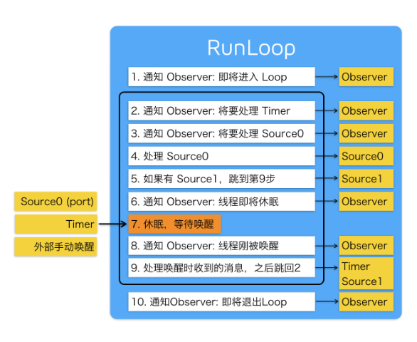
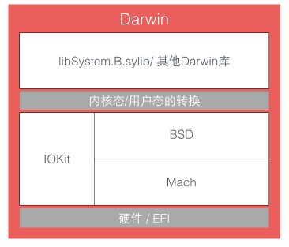
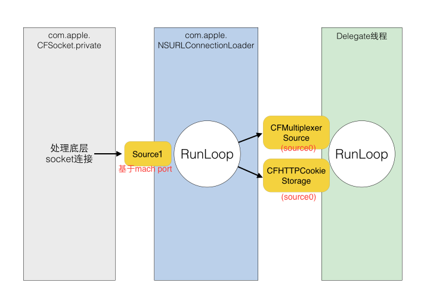

Objective-C:RunLoop(原理)
while(true) printf(“I Like You”);--RunLoop
RunLoop的概念
我们都知道，一般的程序是顺序执行的，一个线程一次只能执行一个任务，执行完成后线程就退出。但是App中不可能执行一个任务应用就退出了，所以需要一个随时处理事件但不退出的线程：
~~~objective-c
function loop() {
initialize();
do {
var message = get_next_message();
process_message(message);
} while (message != quit);
}
~~~这就是Event Loop模型，Node.js的事件处理，Windows程序的消息循环，iOS中的RunLoop，都是这种事件循环。实现这种模型的关键点在于：如何管理事件/消息，如何让线程在没有消息处理时休眠以避免资源占用，在有消息到来时立刻被唤醒。
RunLoop实际上是一个对象，这个对象管理了其需要处理的事件和消息，并提供了一个入口函数来执行Event Loop的逻辑。线程执行了这个函数后，就会一直处于这个函数内部“等待消息-接受消息-处理消息”的循环中，直到这个循环结束（比如传入quit消息），函数返回。
iOS的API提供了两种Event Loop对象：NSRunLoop与CFRunLoopRef。CFRunLoopRef属于CoreFoundation框架，是线程安全的；NSRunLoop是基于CFRunLoopRef的封装，不是线程安全的。
RunLoop与线程
苹果不允许直接创建RunLoop，它提供了两个自动获取的函数：CFRunLoopGetMain()和CFRunLoopGetCurrent()。这两个函数内部的逻辑大概如下：
~~~objective-c
/// 全局的Dictionary，key 是 pthread_t， value 是 CFRunLoopRef
static CFMutableDictionaryRef loopsDic;
/// 访问 loopsDic 时的锁
static CFSpinLock_t loopsLock;
/// 获取一个 pthread 对应的 RunLoop。
CFRunLoopRef _CFRunLoopGet(pthread_t thread) {
OSSpinLockLock(&loopsLock);
if (!loopsDic) {
// 第一次进入时，初始化全局Dic，并先为主线程创建一个 RunLoop。
loopsDic = CFDictionaryCreateMutable();
CFRunLoopRef mainLoop = _CFRunLoopCreate();
CFDictionarySetValue(loopsDic, pthread_main_thread_np(), mainLoop);
}
/// 直接从 Dictionary 里获取。
CFRunLoopRef loop = CFDictionaryGetValue(loopsDic, thread));
if (!loop) {
/// 取不到时，创建一个
loop = _CFRunLoopCreate();
CFDictionarySetValue(loopsDic, thread, loop);
/// 注册一个回调，当线程销毁时，顺便也销毁其对应的 RunLoop。
_CFSetTSD(..., thread, loop, __CFFinalizeRunLoop);
}
OSSpinLockUnLock(&loopsLock);
return loop;
}
CFRunLoopRef CFRunLoopGetMain() {
return _CFRunLoopGet(pthread_main_thread_np());
}
CFRunLoopRef CFRunLoopGetCurrent() {
return _CFRunLoopGet(pthread_self());
}
~~~线程和RunLoop之间是一一对应的，其关系保存在一个全局的Dictionary里。线程刚创建时并没有RunLoop，必须主动获取，RunLoop的创建发生在第一次获取时，Runloop的销毁发生在线程结束时。我们只能在一个线程的内部获取其RunLoop（MainRunLoop除外）。
对外接口
概要
CoreFoundation里面关于RunLoop有5个类：
- CFRunLoopRef
- CFRunLoopModeRef
- CFRunLoopSourceRef
- CFRunLoopTimerRef
- CFRunLoopObserverRef
其中CFRunLoopModeRef类并没有对外暴露，只是通过CFRunLoopRef的接口进行了封装。它们的关系如下：
- RunLoop与线程一一对应
- 一个RunLoop包含多个Mode
- 一个Mode包含多个Source，Timer，Observer
以上的Source/Timer/Observer统称为Mode item，一个item可以被同时加入多个Mode。但一个item被重复加入同一个mode时是不会有效果的。如果一个mode中一个item都没有，则RunLoop会直接退出，不进入循环。
每次调用RunLoop的主函数时，只能指定其中一个Mode，即CurrentMode。如果需要切换Mode，只能退出Loop，再重新指定一个Mode进入。这样做主要是为了分隔开不同组的Source/Timer/Observer，让其互不影响。
Source
CFRunLoopSourceRef是事件产生的地方。Source有两个版本：Source0和Source1.
- Source0，只包含了一个回调（函数指针），它并不能主动触发事件。使用时，需要先调用CFRunLoopSourceSignal(source)，将这个Source标记为待处理，然后手动调用CFRunLoopWakeUp(runloop)来唤醒RunLoop，让其处理这个事件。
- Source1，包含了一个mach_port和一个回调（函数指针），被用于通过内核和其他线程相互发送消息。这种Source能主动唤醒RunLoop的线程。
Timer
CFRunloopTimerRef是基于时间的触发器，它和NSTimer是toll-free bridged（可以同时使用）的，可以混用。其包含一个时间长度和一个回调（函数指针）。当其加入到Runloop时，RunLoop会注册对应的时间点，当时间点到时，RunLoop会被唤醒以执行这个回调。
Observer
CFRunLoopObserverRef是观察者，每个Observer都包含了一个回调（函数指针），当RunLoop的状态发生变化时，观察者就能通过回调接收到这个变化。可以观测的时间点如下：
~~~objective-c
typedef CF_OPTIONS(CFOptionFlags, CFRunLoopActivity) {
kCFRunLoopEntry = (1UL << 0), // 即将进入Loop
kCFRunLoopBeforeTimers = (1UL << 1), // 即将处理 Timer
kCFRunLoopBeforeSources = (1UL << 2), // 即将处理 Source
kCFRunLoopBeforeWaiting = (1UL << 5), // 即将进入休眠
kCFRunLoopAfterWaiting = (1UL << 6), // 刚从休眠中唤醒
kCFRunLoopExit = (1UL << 7), // 即将退出Loop
};
~~~Mode
CFRunLoopMode和CFRunLoop的结构大致如下：
~~~objective-c
struct __CFRunLoopMode {
CFStringRef _name; // Mode Name, 例如 @"kCFRunLoopDefaultMode"
CFMutableSetRef _sources0; // Set
CFMutableSetRef _sources1; // Set
CFMutableArrayRef _observers; // Array
CFMutableArrayRef _timers; // Array
...
};
struct __CFRunLoop {
CFMutableSetRef _commonModes; // Set
CFMutableSetRef _commonModeItems; // Set<Source/Observer/Timer>
CFRunLoopModeRef _currentMode; // Current Runloop Mode
CFMutableSetRef _modes; // Set
...
};
~~~RunLoop中有一个成员变量：_commonModes，一个Mode可以将自己标记为“Common”属性（通过将其ModeName添加到RunLoop的“commonModes”中）。每当RunLoop的内容发生变化时，RunLoop都会自动将_commonModeItems里的Source/Timer/Observer同步到具有“Common”标记的所有Mode里。
主线程RunLoop里有两个预置的Mode：KCFRunLoopDefaultMode和UITrackingRunLoopMode。这两个Mode都被标记为“Common”属性。DefaultMode是App平时所处的状态，TrackingRunLoopMode是ScrollView滑动时的状态。当创建一个Timer加入到DefaultMode中，Timer会得到重复回调，但此时滑动ScrollView，RunLoop将Mode切换为TrackingRunLoopMode，Timer将不会回调，并且不会影响到滑动操作。
如果需要Timer在两个Mode中都能得到回调，一种方式就是将这个Timer分别加入这两个Mode。另一种方式是将Timer加入到顶层的RunLoop的“commonModeItems”中，“commonModeItems”被RunLoop自动更新到所有具有“Common”属性的Mode里去。
CFRunLoop管理Mode的接口只有两个：
~~~objective-c
CFRunLoopAddCommonMode(CFRunLoopRef runloop, CFStringRef modeName);
CFRunLoopRunInMode(CFStringRef modeName, ...);
~~~Mode管理Mode item的接口有以下几个：
~~~objective-c
CFRunLoopAddSource(CFRunLoopRef rl, CFRunLoopSourceRef source, CFStringRef modeName);
CFRunLoopAddObserver(CFRunLoopRef rl, CFRunLoopObserverRef observer, CFStringRef modeName);
CFRunLoopAddTimer(CFRunLoopRef rl, CFRunLoopTimerRef timer, CFStringRef mode);
CFRunLoopRemoveSource(CFRunLoopRef rl, CFRunLoopSourceRef source, CFStringRef modeName);
CFRunLoopRemoveObserver(CFRunLoopRef rl, CFRunLoopObserverRef observer, CFStringRef modeName);
CFRunLoopRemoveTimer(CFRunLoopRef rl, CFRunLoopTimerRef timer, CFStringRef mode);
~~~我们只能通过 mode name 来操作内部的mode，当传入一个新的 mode name 但RunLoop内部没有对应的mode时，RUnLoop会自动创建对应的CFRunLoopRef。对于一个RunLoop来说，其内部的mode只能增加不能删除。
Apple公开提供的Mode有两个：kCFRunLoopDefaultMode（NSDefaultRunLoopMode）和 UITrackingRunLoopMode，我们可以使用这两个 mode name 来操作对应的额 mode。 同时苹果还提供了一个操作Common标记的字符串：KCFRunLoopCommonModes（NSRunLoopCommonModes），我们可以用这个字符串来操作CommonItems或者标记一个Mode为“Common”。使用时要注意区分这个字符串和其他 mode name。
内部逻辑
根据苹果文档里的说明，RunLoop内部的逻辑大致如下：

- 通知Observer：即将进入Loop（Observer）；
- 通知Observer：将要处理Timer（Observer）；
- 通知Observer：将要处理Source0（Observer）；
- 处理Source0（Source0）；
- 如果有Source1，跳到第9步骤（Source1）；
- 通知Observer，线程即将休眠（Observer）；
- 休眠，等待唤醒（Source0(port)、Timer、以及外部手动唤醒）；
- 通知Observer，线程刚被唤醒（Observer）；
- 处理唤醒时收到的消息，跳回第2步骤（处理Source1，Timer）；
- 通知Observer：即将推出Loop（Observer）。
RunLoop内部是一个do-while循环。当调用CFRunLoopRun()时，线程会一直停留在这个循环里，直到超时或被手动的停止，该函数才返回。
等待与唤醒
OSX/iOS的系统架构由上至下分为4层：
- 应用层；（包括用户能接触到的图形应用）
- 应用框架层；（开发人员接触到的Cocoa等框架）
- 核心框架层；（包括各种核心框架、OpenGL等内容）
- Darwin。（操作系统的核心，包括系统内核、驱动。Shell等。这一层是开源的，源码：opensource.apple.com）
Darwin的核心结构如下图：

XNU内核：硬件层之上的三个部分：Mach、BSD、IOKit等共同组成了XNU内核。
Mach：XNU内核的内环被称作Mach，Mach作为一个微内核，仅提供诸如处理器调度、IPC（进程间通信）等非常少量的基础服务；
BSD：BSD层可以看做围绕Mach层的一个外环，其提供了诸如进程管理、文件系统和网络等功能；
IOKit：IOKit层是为设备驱动提供了一个面向对象（C++）的一个框架。
mach_msg：进程、线程和虚拟内存等对象通过端口发送消息进行通信，RunLoop通过mach_msg()函数接收消息（或者说调用mach_msg()函数监听唤醒端口），如果没有port消息（被唤醒前），内核将线程置于等待状态等待消息的接收，停留在mach_msg_trap状态；如果有消息，判断消息的类型处理事件，并执行相应回调。
苹果用RunLoop实现的功能
应用启动
- 加载二进制；
- 检查沙箱；
- Objective-C Class Load Initialize；
- attribute((constructor))函数，C++全局对象构造函数；
- 加载必要的资源（info.plist）,并显示启动页；
- main函数初始化UIApplicationMain；
- 开启runloop，系统默认注册了5个Mode：
- UIInitializationRunLoopMode：App启动时进入的第一个Mode，启动完成后不再使用；
- KCFRunLoopDefaultMode：App的默认Mode，通常主线程在这个Mode下运行；
- UITrackingRunLoopMode：界面跟踪的Mode，用于Scrollview追踪触摸滑动，保证界面滑动时不受其他Mode影响；
- GSEventReveiveRunLoopMode：接收系统事件的内部Mode；
- KCFRunLoopCommonModes：占位Mode，作为标记DefaultMode和CommonMode用。
App启动时，RunLoop的状态：
~~~objective-c
CFRunLoop {
current mode = kCFRunLoopDefaultMode
common modes = {
UITrackingRunLoopMode
kCFRunLoopDefaultMode
}
common mode items = {
// source0 (manual)
CFRunLoopSource {order =-1, {
callout = _UIApplicationHandleEventQueue}}
CFRunLoopSource {order =-1, {
callout = PurpleEventSignalCallback }}
CFRunLoopSource {order = 0, {
callout = FBSSerialQueueRunLoopSourceHandler}}
// source1 (mach port)
CFRunLoopSource {order = 0, {port = 17923}}
CFRunLoopSource {order = 0, {port = 12039}}
CFRunLoopSource {order = 0, {port = 16647}}
CFRunLoopSource {order =-1, {
callout = PurpleEventCallback}}
CFRunLoopSource {order = 0, {port = 2407,
callout = _ZL20notify_port_callbackP12__CFMachPortPvlS1_}}
CFRunLoopSource {order = 0, {port = 1c03,
callout = __IOHIDEventSystemClientAvailabilityCallback}}
CFRunLoopSource {order = 0, {port = 1b03,
callout = __IOHIDEventSystemClientQueueCallback}}
CFRunLoopSource {order = 1, {port = 1903,
callout = __IOMIGMachPortPortCallback}}
// Ovserver
CFRunLoopObserver {order = -2147483647, activities = 0x1, // Entry
callout = _wrapRunLoopWithAutoreleasePoolHandler}
CFRunLoopObserver {order = 0, activities = 0x20, // BeforeWaiting
callout = _UIGestureRecognizerUpdateObserver}
CFRunLoopObserver {order = 1999000, activities = 0xa0, // BeforeWaiting | Exit
callout = _afterCACommitHandler}
CFRunLoopObserver {order = 2000000, activities = 0xa0, // BeforeWaiting | Exit
callout = _ZN2CA11Transaction17observer_callbackEP19__CFRunLoopObservermPv}
CFRunLoopObserver {order = 2147483647, activities = 0xa0, // BeforeWaiting | Exit
callout = _wrapRunLoopWithAutoreleasePoolHandler}
// Timer
CFRunLoopTimer {firing = No, interval = 3.1536e+09, tolerance = 0,
next fire date = 453098071 (-4421.76019 @ 96223387169499),
callout = _ZN2CAL14timer_callbackEP16__CFRunLoopTimerPv (QuartzCore.framework)}
},
modes ＝ {
CFRunLoopMode {
sources0 = { /* same as 'common mode items' */ },
sources1 = { /* same as 'common mode items' */ },
observers = { /* same as 'common mode items' */ },
timers = { /* same as 'common mode items' */ },
},
CFRunLoopMode {
sources0 = { /* same as 'common mode items' */ },
sources1 = { /* same as 'common mode items' */ },
observers = { /* same as 'common mode items' */ },
timers = { /* same as 'common mode items' */ },
},
CFRunLoopMode {
sources0 = {
CFRunLoopSource {order = 0, {
callout = FBSSerialQueueRunLoopSourceHandler}}
},
sources1 = (null),
observers = {
CFRunLoopObserver >{activities = 0xa0, order = 2000000,
callout = _ZN2CA11Transaction17observer_callbackEP19__CFRunLoopObservermPv}
)},
timers = (null),
},
CFRunLoopMode {
sources0 = {
CFRunLoopSource {order = -1, {
callout = PurpleEventSignalCallback}}
},
sources1 = {
CFRunLoopSource {order = -1, {
callout = PurpleEventCallback}}
},
observers = (null),
timers = (null),
},
CFRunLoopMode {
sources0 = (null),
sources1 = (null),
observers = (null),
timers = (null),
}
}
}
~~~当RunLoop进行回调时，一般通过一个很长的函数call out：
~~~objective-c
{
/// 1. 通知Observers，即将进入RunLoop
/// 此处有Observer会创建AutoreleasePool: _objc_autoreleasePoolPush();
__CFRUNLOOP_IS_CALLING_OUT_TO_AN_OBSERVER_CALLBACK_FUNCTION__(kCFRunLoopEntry);
do {
/// 2. 通知 Observers: 即将触发 Timer 回调。
__CFRUNLOOP_IS_CALLING_OUT_TO_AN_OBSERVER_CALLBACK_FUNCTION__(kCFRunLoopBeforeTimers);
/// 3. 通知 Observers: 即将触发 Source (非基于port的,Source0) 回调。
__CFRUNLOOP_IS_CALLING_OUT_TO_AN_OBSERVER_CALLBACK_FUNCTION__(kCFRunLoopBeforeSources);
__CFRUNLOOP_IS_CALLING_OUT_TO_A_BLOCK__(block);
/// 4. 触发 Source0 (非基于port的) 回调。
__CFRUNLOOP_IS_CALLING_OUT_TO_A_SOURCE0_PERFORM_FUNCTION__(source0);
__CFRUNLOOP_IS_CALLING_OUT_TO_A_BLOCK__(block);
/// 6. 通知Observers，即将进入休眠
/// 此处有Observer释放并新建AutoreleasePool: _objc_autoreleasePoolPop(); _objc_autoreleasePoolPush();
__CFRUNLOOP_IS_CALLING_OUT_TO_AN_OBSERVER_CALLBACK_FUNCTION__(kCFRunLoopBeforeWaiting);
/// 7. sleep to wait msg.
mach_msg() -> mach_msg_trap();
/// 8. 通知Observers，线程被唤醒
__CFRUNLOOP_IS_CALLING_OUT_TO_AN_OBSERVER_CALLBACK_FUNCTION__(kCFRunLoopAfterWaiting);
/// 9. 如果是被Timer唤醒的，回调Timer
__CFRUNLOOP_IS_CALLING_OUT_TO_A_TIMER_CALLBACK_FUNCTION__(timer);
/// 9. 如果是被dispatch唤醒的，执行所有调用 dispatch_async 等方法放入main queue 的 block
__CFRUNLOOP_IS_SERVICING_THE_MAIN_DISPATCH_QUEUE__(dispatched_block);
/// 9. 如果如果Runloop是被 Source1 (基于port的) 的事件唤醒了，处理这个事件
__CFRUNLOOP_IS_CALLING_OUT_TO_A_SOURCE1_PERFORM_FUNCTION__(source1);
} while (...);
/// 10. 通知Observers，即将退出RunLoop
/// 此处有Observer释放AutoreleasePool: _objc_autoreleasePoolPop();
__CFRUNLOOP_IS_CALLING_OUT_TO_AN_OBSERVER_CALLBACK_FUNCTION__(kCFRunLoopExit);
}
~~~AutoreleasePool
App启动后，在主线程RunLoop里注册了两个Observer，其回调都是_wrapRunLoopWithAutoreleasePoolHandler()。
第一个Observer监听的事件是Entry（即将进入Loop），其回调内会调用_objc_autoreleasePoolPush()创建自动释放池，其order是-2147483647，优先级最高，保证创建释放池发生在所有回调之前。
_第二个Observer监听的事件有两个：BeforeWaiting（准备进入休眠），其回调内会调用_objc_autoreleasePoolPop()释放旧池以及_objc_autoreleasePoolPush()创建新池；Exit（即将推出Loop时），其回调内会调用_objc_autoreleasePoolPop()来释放自动释放池，这个Observer的order是2147483647，优先级最低，保证释放自动释放池的操作发生在其他所有回调之后。
在主线程执行的代码，通常是写在诸如时间回调、Timer回调内的。这些操作都在RunLoop创建好的AutoreleasePool之内，不会出现内存泄漏，我们也不必显示创建AutoreleasePool。
事件响应
- 苹果注册了一个Source1用来接收系统事件，其回调函数为__IOHIDEventSystemClientQueueCallback()；
- 当一个硬件事件（触摸、锁屏、摇晃等）发生后，首先由IOKit.framework生成一个IOHIDEvent事件并由SpringBoard接收。SpringBoard只接收按键（锁屏、静音等）、触摸、加速、接近传感器等几种Event；
- 随后用mach port 转发给需要的App进程。之后触发所注册的Source1的回调，并调用_UIApplicationHandleEventQueue()进行应用内部的分发。
- _UIApplicationHandleEventQueue()会把IOHIDEvent处理并包装秤UIEvent进行处理或分发，其中包括识别UIGesture、处理屏幕旋转、发送给Window等。通常事件比如UIButton点击、touchesBegin/Move/End/Cancel等都是在这个回调中完成的。
手势识别
当_UIApplicationHandleEventQueue()识别了一个手势时，首先调用Cancel将当前的touchesBegin/Move/End系列回调打断。随后系统将对应的UIGestureRecognizer标记为待处理。
_苹果注册了一个Observer监听BeforeWaiting（Loop即将进入休眠）事件，其回调函数是_UIGestureRecognizerUpdateObserver()，这个回调会获取所有刚被标记为待处理的GestRecognizer，并执行GestRecognizer的回调。
当有UIGestureRecognizer的变化（创建、销毁、状态改变）时，这个回调都会进行相应处理。
界面更新
当在操作UI时，比如改变了Frame，更新了UIView/CALayer的层次时，或者手动调用了UIView/CALayer的setNeedsLayout/setNeedsDisplay方法后，这个UIView/CALayer就被标记为待处理，并被提交到一个全局的容器去。
苹果注册了一个Observer监听BeforeWaiting（Loop即将进入休眠）和Exit（即将退出Loop）事件，其回调函数是_ZN2CA11Transaction17observer_callbackEP19__CFRunLoopObservermPv()，这个函数会便利所有待处理的UIView/CALayer以执行实际的调整和绘制，并更新UI界面。这个函数的调用栈：
~~~objective-c
_ZN2CA11Transaction17observer_callbackEP19__CFRunLoopObservermPv()
QuartzCore:CA::Transaction::observer_callback:
CA::Transaction::commit();
CA::Context::commit_transaction();
CA::Layer::layout_and_display_if_needed();
CA::Layer::layout_if_needed();
[CALayer layoutSublayers];
[UIView layoutSubviews];
CA::Layer::display_if_needed();
[CALayer display];
[UIView drawRect];
~~~定时器
NSTimer：其本质就是CFRunLoopTimerRef，它们之间是 toll-free bridged的。
一个NSTimer注册到RunLoop后，RunLoop会为其重复的时间点注册好事件。为了节省资源，RunLoop并不会在非常准确的时间点回调这个Timer。
Timer有个属性Tolerance（宽容度），标示了当时间点到后，容许的误差。如果时间点错过了（执行了一个很长的任务），则该时间点的回调也会跳过去，不会延后执行。
CADisplayLink：是一个和屏幕刷新率一致的定时器（其实现原理是内部操作的Source）。如果在两次屏幕刷新之间执行了一个长任务，那其中就会有一帧被跳过去，造成界面卡顿的感觉。在快速滑动TableView时，即使一帧的卡顿也会让用户有所察觉。
PerformSelector
当调用NSObject的performSelecter:afterDelay:后，其内部会创建一个Timer并添加到当前线程的RunLoop中。如果没有RunLoop，则这个方法会失效。
当调用NSObject的performSelector:onThread:后，其内部也会创建一个Timer加到对应的线程去，同样的，如果对应线程没有RunLoop，则该方法也会失效。
NSTimer和performSEL方法实际上是对CFRunloopTimerRef的封装；runloop启动时设置的最大超时时间实际上是GCD的dispatch_source_t类型。
GCD
当调用dispatch_async(dispatch_get_main_queue(), block) 时，libDispatch会向主线程的RunLoop发送消息，RunLoop会被唤醒，并从消息中取得这个block，在回调CFRUNLOOP_IS_SERVICING_THE_MAIN_DISPATCH_QUEUE()里执行这个block。该逻辑仅限于Dispatch到主线程，Dispatch到其他线程仍然是有libDispatch处理的。
关于网络请求
iOS中，关于网络请求的接口自下至上有如下几层：
~~~objective-c
CFSocket
CFNetwork ->ASIHttpRequest
NSURLConnection ->AFNetworking
NSURLSession ->AFNetworking2, Alamofire
~~~- CFSocket：是最底层的接口，只负责socket通信；
- CFNetwork：是基于CFSocket等的上层封装ASI工作于这一层；
- NSURLConnection：是基于CFNetwork的更高级的封装，提供面向对象的接口，AFN工作于这一层；
- NSURLSession：iOS7新增接口，表面上是和NSURLConnection并列的，但底层仍然用到了NSURLConnection的部分功能 (比如 com.apple.NSURLConnectionLoader 线程)，AFN3.0和Alamofire工作于这一层。
NSURLConnection的工作过程解析：

通常使用NSURLConnection时，会传入一个delegate。当调用[connection start]后，delegate会不停的收到事件回调，start函数内部获取CurrentRunLoop，然后添加4哥Source0（需要手动触发）到DefaultMode。
Delegate线程中的4中Source0中，CFMultiplexerSource是负责各种delegate回调的，CFHTTPCookieStorage是处理各种Cookie的。 网络传输是，NSURLConnection创建了两个线程：com.apple.NSURLConnectionLoader和com.apple.CFSocket.private。
CFSocket线程是处理底层socket连接的。
NSURLConnectionLoader线程的RunLoop通过基于mach port的Source接收底层CFSocket的消息，收到消息后，在适宜的时机向CFMultiplexerSource等Source0发送通知，并唤醒Delegate线程的RunLoop让其处理消息，并基于CFMultiplexerSource执行实际的回调。
结语
站在巨人的肩上，可以看的更远。这篇文章是我对RunLoop的学习总结，鉴于时间、心力及能力，对于RunLoop及其底层的研究大部分来源于各位前辈的文章、demo，在此郑重的表示感谢，并附上前辈的原文链接：http://blog.ibireme.com/2015/05/18/runloop/